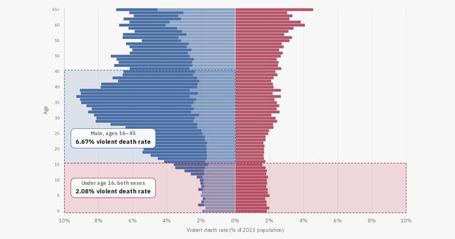
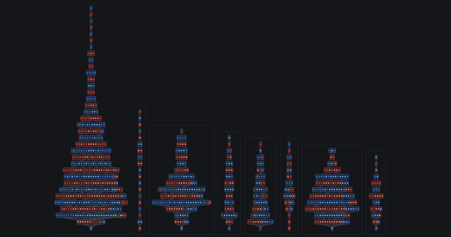

Various Visualizations
-

r/dataisbeautiful · Interactive · GazaViolent Death Rate by Age and Sex
Violent death rates in Gaza by age and sex over the three year period since Oct 7 2023.
Open the chart → -

r/dataisbeautiful · Interactive · MetaAnatomy of a /r/dataisbeautiful flame war
A visualization of comments on the reddit thread discussing the violent death rates visualization.
Explore the thread →